/ 01
Librazhd
Männerfüße, die fallen wie Donner — Librazhd tanzt nicht, es bezeugt. Këmbët burrërore që bien si gjëmë — Librazhdi nuk vallëzon, ai dëshmon. Men's feet falling like thunder — Librazhd does not dance, it testifies.
Albania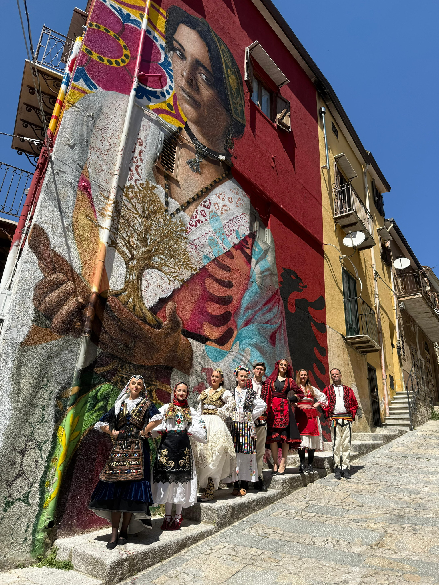
AKV „Hyjnesha“ wurde 2022 in Graz geboren — nicht als Projekt, sondern als Notwendigkeit. Die Notwendigkeit, das am Leben zu erhalten, was viele Vergangenheit nennen, wir aber als Seele kennen: den albanischen Volkstanz. Mit 60 Mitgliedern und über 50 Tänzer:innen sind wir das einzige albanische Tanzensemble in Österreich.AKV “Hyjnesha” lindi në vitin 2022 në Graz — jo si projekt, por si nevojë. Nevojë për të mbajtur gjallë atë që shumë e quajnë të kaluarë, por ne e njohim si shpirt: vallja popullore shqiptare. Me 60 anëtarë dhe mbi 50 valltarë, jemi ansambli i vetëm shqiptar i vallëzimit në Austri.AKV “Hyjnesha” was born in Graz in 2022 — not as a project, but as a necessity. A necessity to keep alive what many call the past, but we know as the soul: Albanian folk dance. With 60 members and over 50 dancers, we are the only Albanian dance ensemble in Austria.
Jeder Tanz, den wir auf die Bühne bringen, trägt zweierlei in sich: die Treue zum Ursprung und den Mut zur Gestaltung. Wir tanzen nicht um zu bewahren — wir tanzen um weiterzugeben. Das ist der Unterschied.Çdo valle që sjelim në skenë mbart në vetvete dy gjëra: besnikërinë ndaj origjinës dhe guximin e krijimtarisë. Nuk vallëzojmë për të ruajtur — vallëzojmë për të transmetuar. Kjo është dallimi.Every dance we bring to the stage carries two things within it: fidelity to its origin and the courage to create. We do not dance to preserve — we dance to pass on. That is the difference.
Wenn sich der Reigen schließt, öffnet sich etwas in uns.Kur mbyllet rrethi i vallës, diçka hapet brenda nesh.When the circle of the dance closes, something opens within us.
Von den Bergen Rugovas bis in die Täler Librazhds — jeder Tanz spricht die Sprache des Ortes, der ihn gebar. Unser Repertoire ist keine Sammlung; es ist eine Landkarte der albanischen Seele. Nga malet e Rugovës deri te luginat e Librazhdit — secila valle flet gjuhën e vendit që e lindi. Repertori ynë nuk është koleksion; është hartë e shpirtit shqiptar. From the mountains of Rugova to the valleys of Librazhd — every dance speaks the language of the place that gave birth to it. Our repertoire is not a collection; it is a map of the Albanian soul.
Männerfüße, die fallen wie Donner — Librazhd tanzt nicht, es bezeugt. Këmbët burrërore që bien si gjëmë — Librazhdi nuk vallëzon, ai dëshmon. Men's feet falling like thunder — Librazhd does not dance, it testifies.
AlbaniaGanz Albanien in einem Tanz — Regionen, Rhythmen und Temperamente vereinen sich in einem einzigen Werk. Shqipëria e tërë në një valle — rajonet, ritmet dhe temperamentet bashkohen në një vepër të vetme. All of Albania in one dance — regions, rhythms and temperaments unite in a single work.
MixDer Fluss Drin spricht durch unsere Schritte — weite Kreise, stille Schritte, tiefer Atem. Lumi Drin flet nëpër këmbët tona — rrathe të gjera, hapa të qetë, frymëmarrje e thellë. The river Drin speaks through our feet — wide circles, quiet steps, deep breath.
KosovoZwei Körper, ein Rhythmus — der lyrische Tanz ist jene Liebe, die keine Worte braucht. Dy trupa, një ritëm — vallja lirike është ajo dashuri që nuk ka nevojë për fjalë. Two bodies, one rhythm — the lyrical dance is that love which needs no words.
LirikDie Berge Rugovas beten nicht — sie stehen. So auch dieser Tanz: aufrechter Rücken, sicherer Schritt, Stolz ohne Lärm. Malet e Rugovës nuk luten — ato qëndrojnë. Ashtu edhe kjo valle: shpinë e drejtë, hap i sigurt, krenari pa zhurmë. The mountains of Rugova do not pray — they stand. So does this dance: upright spine, certain step, pride without noise.
KosovoAus dem Norden kommt der Sturm — schnelle Schritte, freies Herz, echter Bergmensch in jeder Wendung. Nga veriu vjen furtuna — hapa të shpejtë, zemër e lirë, malësor i vërtetë në çdo kthesë. From the north comes the storm — quick steps, free heart, true mountain spirit in every turn.
Albania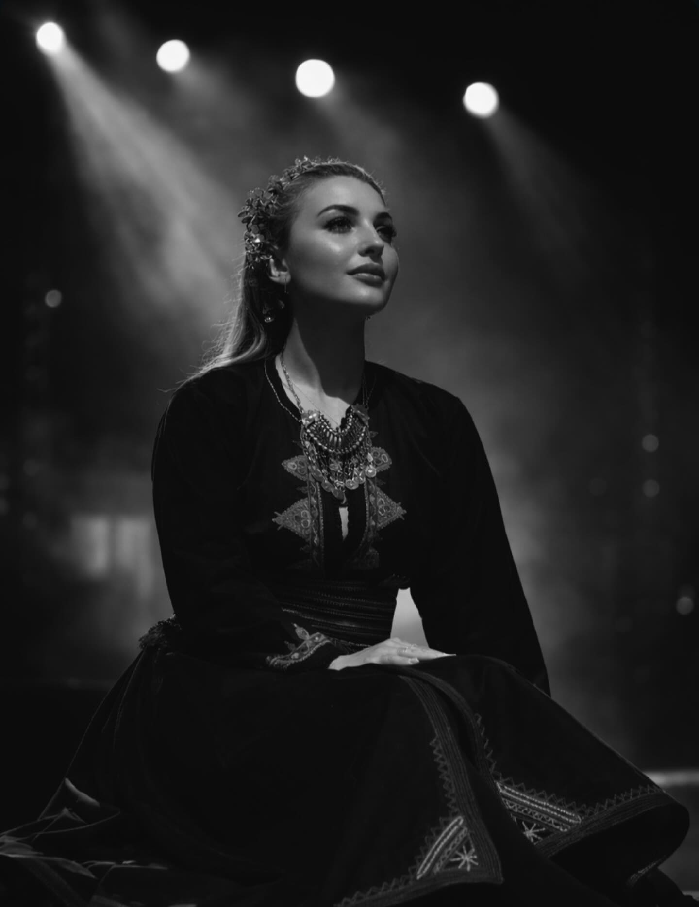
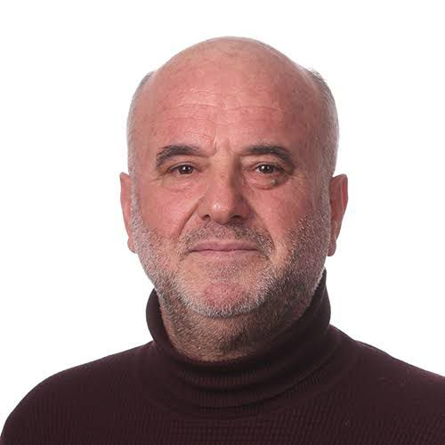
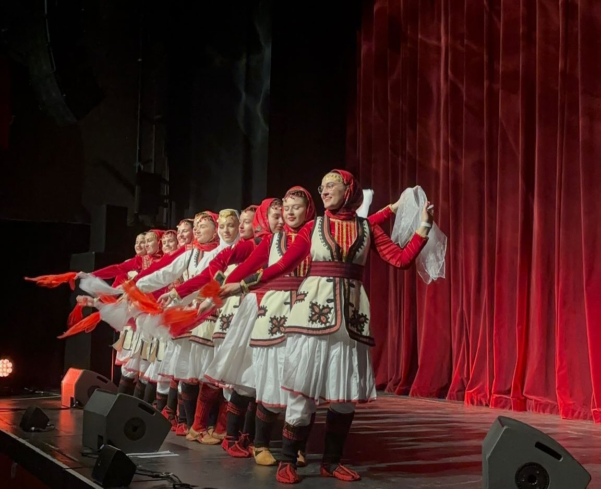
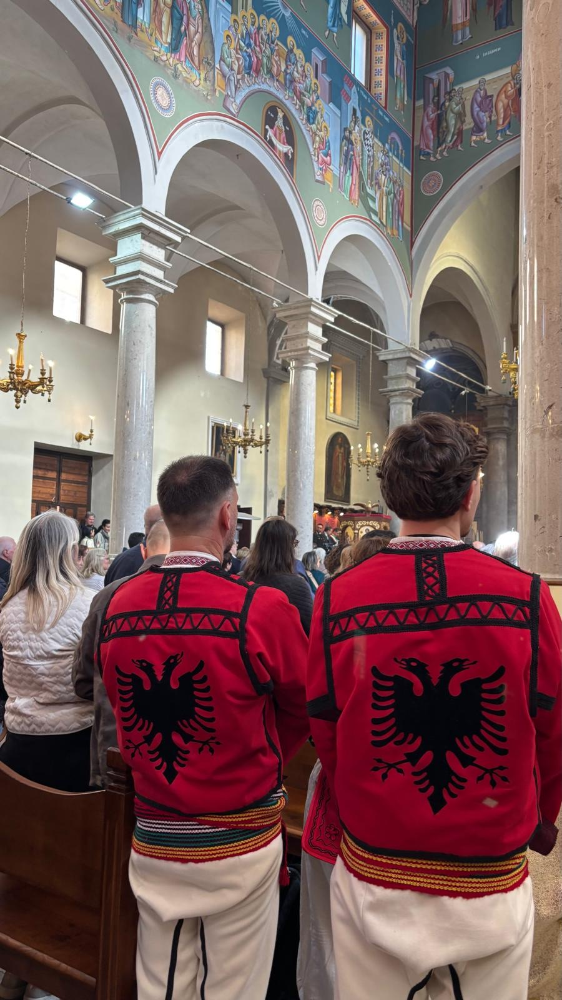
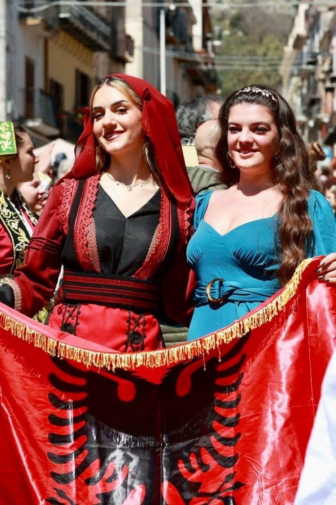
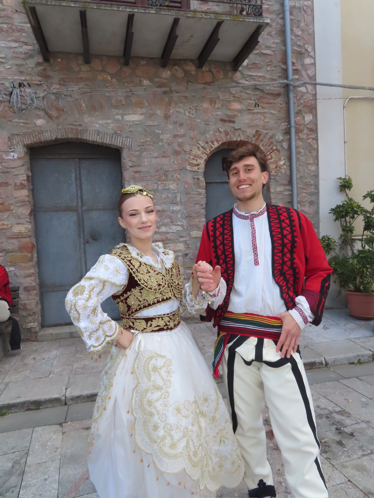
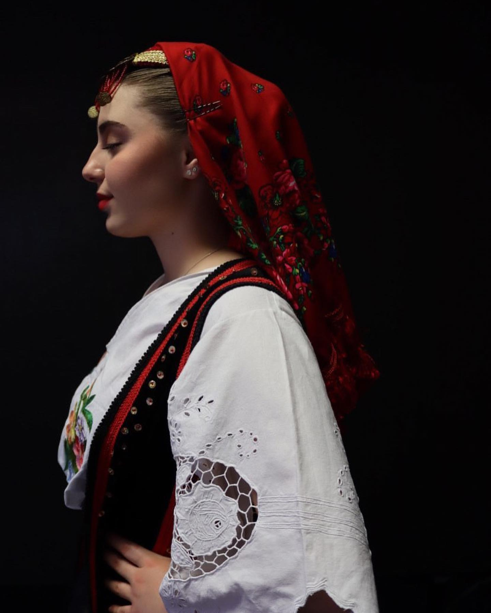
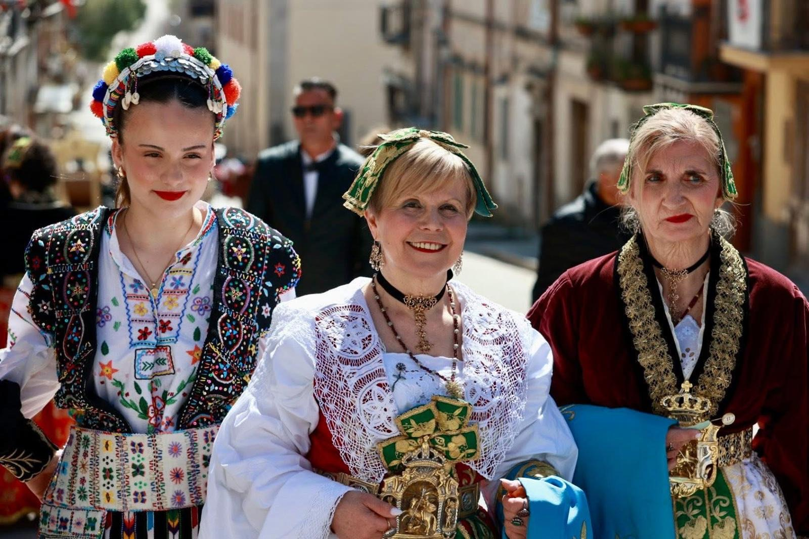
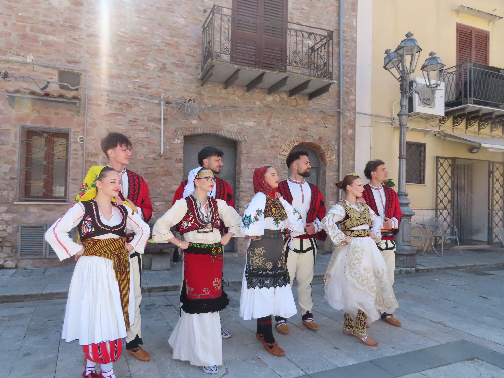
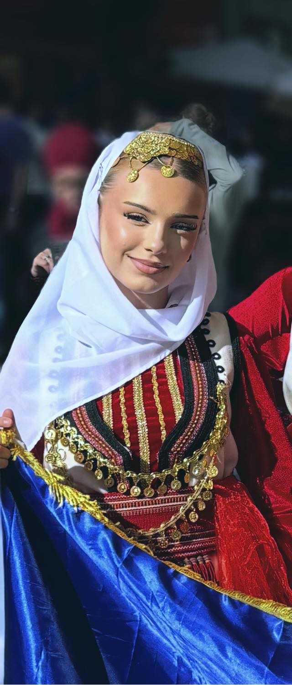
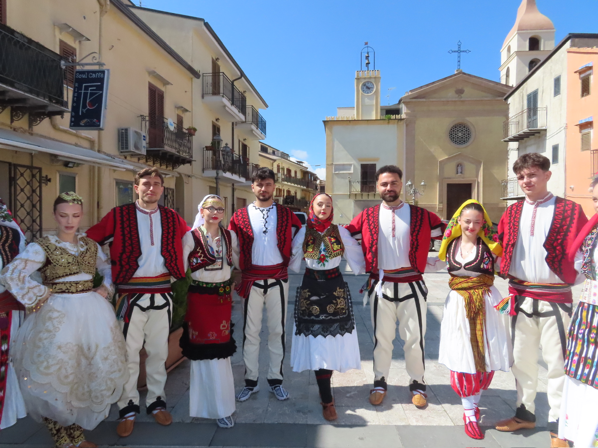
Einblicke aus Auftritten, Proben und der Energie, die das Ensemble am Leben hält — auf und hinter der Bühne.Pamje nga paraqitjet, provat dhe energjia që e mban ansamblin gjallë — brenda dhe jashtë skenës.Glimpses from performances, rehearsals and the energy that keeps the ensemble alive — on and behind the stage.
Hora e Arbëreshëve
Hora e Arbëreshëve
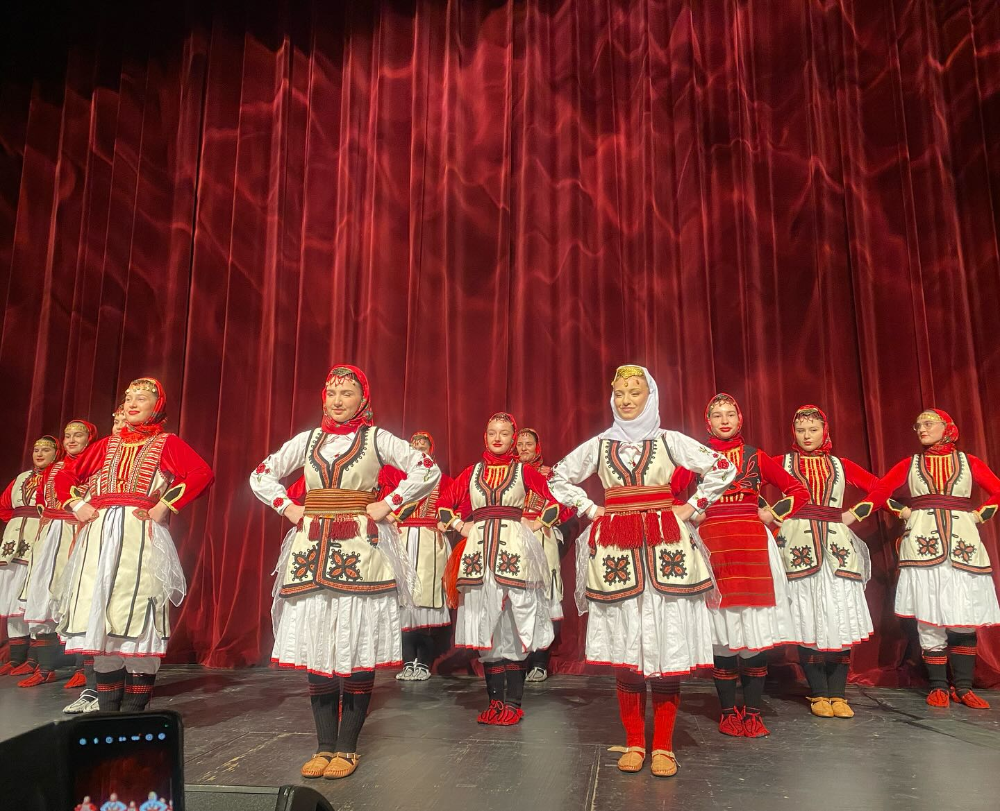
Gjilan, KosovoGjilan, KosovëGjilan, Kosovo
Kapfenberg, ÖsterreichKapfenberg, AustriKapfenberg, Austria
Graz, ÖsterreichGraz, AustriGraz, Austria
Prizren, KosovoPrizren, KosovëPrizren, Kosovo
Sizilien, ItalienSicili, ItaliSicily, Italy
Piana degli Albanesi, Sizilien, ItalienPiana degli Albanesi, Sicili, ItaliPiana degli Albanesi, Sicily, Italy
Kapfenberg, ÖsterreichKapfenberg, AustriKapfenberg, Austria
Tirana, AlbanienTiranë, ShqipëriTirana, Albania
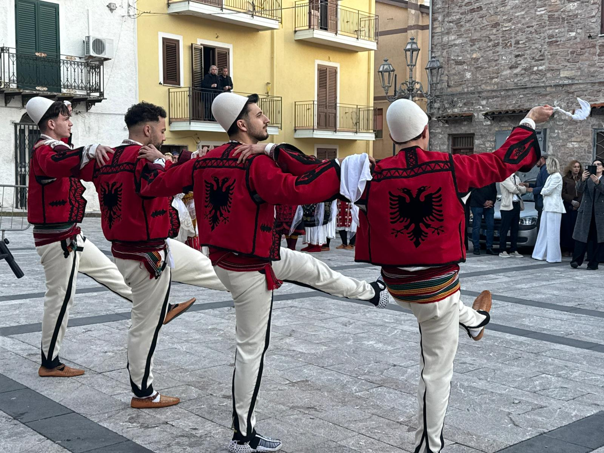
Bei den Arbëreshë Siziliens fanden wir etwas Unerwartetes: uns selbst. Ein Abend, an dem der Tanz Generationen und Kontinente verband.Tek Arbëreshët e Sicilisë, gjetëm diçka që nuk e prisnim: veten tonë. Një mbrëmje ku vallja bashkoi brezat dhe kontinentet.Among the Arbëreshë of Sicily, we found something we didn't expect: ourselves. An evening where dance united generations and continents.
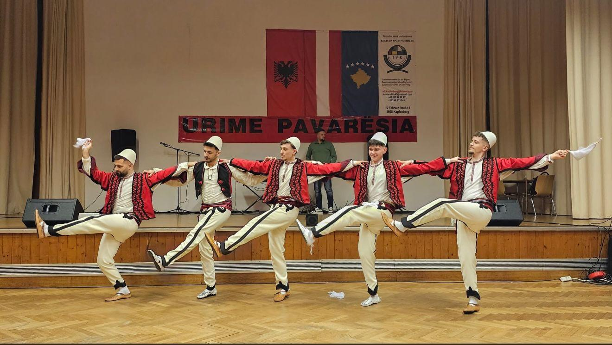
Österreichische Bühne, albanische Kostüme, dasselbe Herz. Kapfenberg gab uns ein neues Publikum — und wir gaben ihm Albanien.Skenë austriake, kostume shqiptare, zemra të njëjta. Kapfenbergu na dha një publik të ri — dhe ne i dhamë atij Shqipërinë.Austrian stage, Albanian costumes, the same heart. Kapfenberg gave us a new audience — and we gave it Albania.
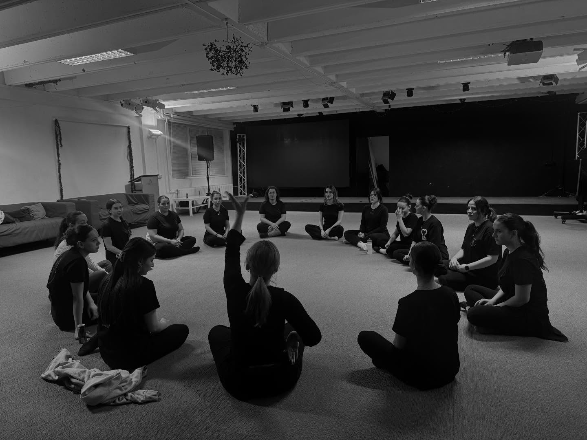
Folklore ist keine Vergangenheit — sie ist die erste Sprache, die wir lernten, noch vor den Worten. Wir tanzen, weil das unsere Art ist zu sagen: Wir sind hier, und wir vergessen nicht.Folklori nuk është e shkuar — është gjuha e parë që mësuam, para fjalëve. Vallëzojmë sepse kjo është mënyra jonë për të thënë: jemi këtu, dhe nuk harrojmë.Folklore is not the past — it is the first language we learned, before words. We dance because it is our way of saying: we are here, and we do not forget.
Das einzige albanische Tanzensemble in Österreich, gegründet 2022 in Graz.Ansambli i vetëm shqiptar i vallëzimit në Austri, i themeluar në vitin 2022 në Graz.The only Albanian dance ensemble in Austria, founded in Graz in 2022.
Bühnenprogramm mit Tänzen, Kostümen und Choreografien aus dem albanischen Folklorereppertoire.Program skenik me valle, kostume dhe koreografi të folklorit shqiptar.Stage programme with dances, costumes and Albanian folklore choreographies.
Hinter jedem Kostüm, jeder Probe und jeder Reise steht die Unterstützung von Menschen, die glauben, dass Kultur es wert ist. Werde Teil dieses Weges.Pas çdo kostumi, çdo prove dhe çdo udhëtimi qëndron mbështetja e njerëzve që besojnë se kultura ia vlen. Bëhu pjesë e kësaj rruge.Behind every costume, every rehearsal and every journey stands the support of people who believe culture is worth it. Become part of this path.
Partner werdenBëhu partnerBecome a partnerWir proben regelmäßig in Graz. Wenn ihr mitmachen, uns einladen oder einfach mehr erfahren möchtet — die Tür ist offen.Provojmë rregullisht në Graz. Nëse dëshironi të bashkoheni, të na ftoni ose thjesht të dini më shumë — dera është e hapur.We rehearse regularly in Graz. If you want to join, invite us, or simply learn more — the door is open.
Proben nach VereinbarungProvat sipas marrëveshjesRehearsals by arrangement